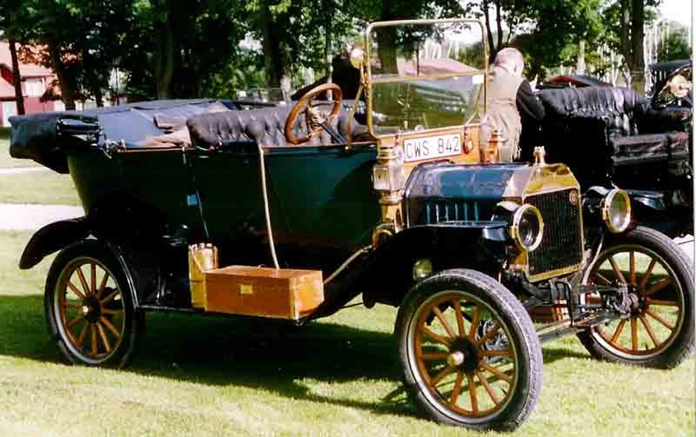
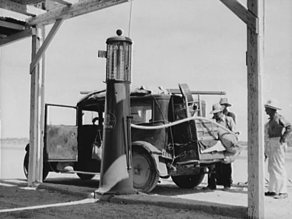
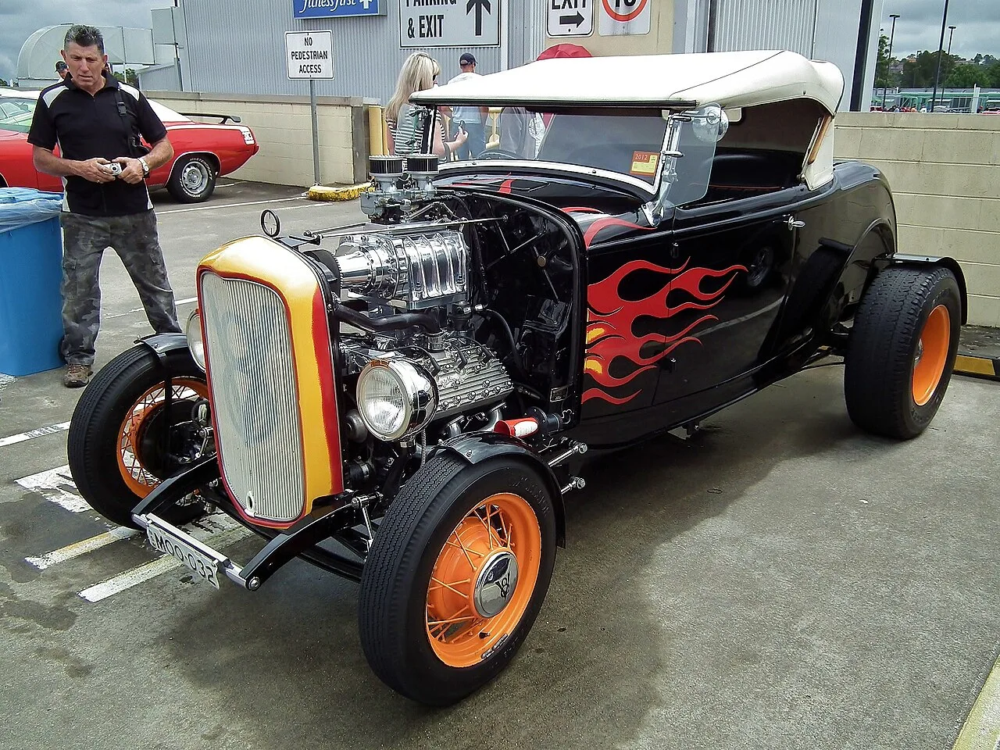
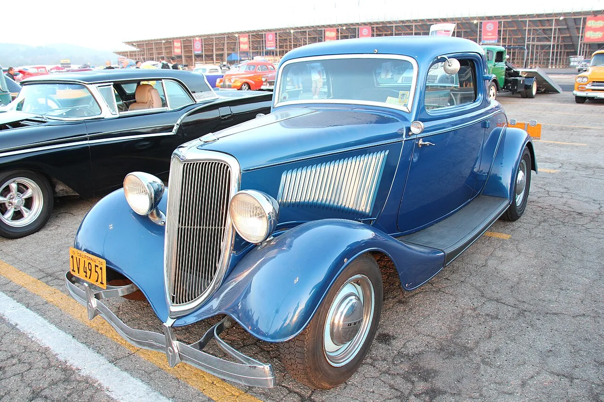
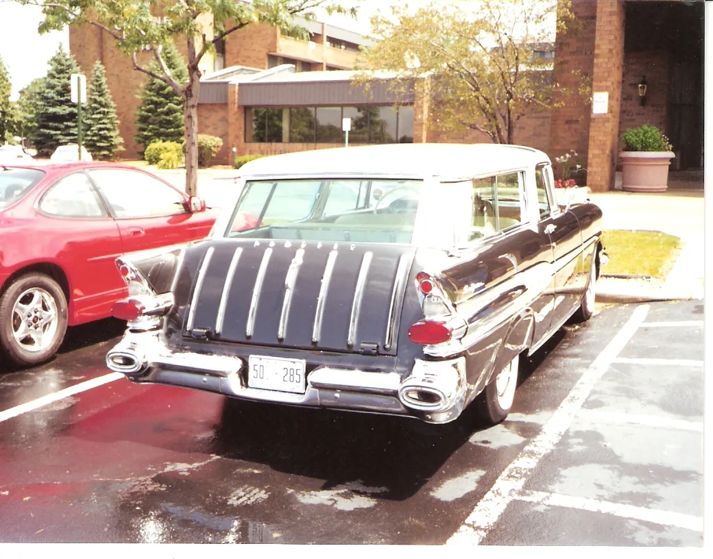
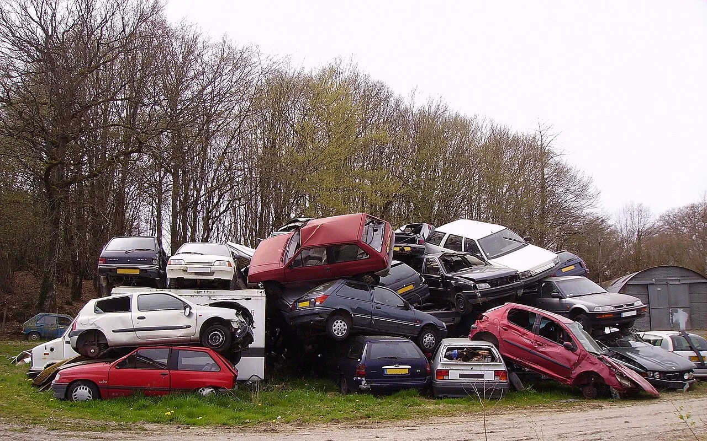

▲ 이번 경매에는 1912년식 포드 모델 T 투어링을 비롯해 3대에 걸쳐 모은 약 300대의 클래식카·트럭·프로젝트카가 출품된다 (사진은 동시대 모델 T 투어링 예시)
1. 3대가 모은 컬렉션, 통째로 경매대에 오르다
오는 9월 19일 토요일 오전 9시, 미국 콜로라도주 이턴(덴버 북쪽으로 약 90분, 포트콜린스 동쪽에 위치)의 한 부지에서 대규모 클래식카 경매가 열린다. 경매를 진행하는 곳은 미국 중서부를 중심으로 활동하는 전문 경매사 VanDerBrink Auctions다. 이번 경매의 이름은 '본 패밀리 이스테이트 컬렉션(Born Family Estate Collection)'. 세상을 떠난 더그 본(Doug Born)과 그의 아버지, 할아버지까지 이어진 3대에 걸친 자동차 수집품이다.
본 가문은 미네소타주 곤빅(Gonvick)에서 정비소를 인수하며 자동차와 인연을 맺었고, 이후 '로키 마운틴 렐릭스(Rocky Mountain Relics)'라는 부품 사업을 운영하며 전국 각지의 경매장을 돌아다녔다. 1978~79년 처음으로 자체 경매를 시작한 이래 수십 년간 쌓아온 물량이 이번에 한꺼번에 풀리는 셈이다. 출품 규모는 차량·트럭·미완성 프로젝트카를 합쳐 약 300대, 여기에 빈티지 도로 표지판과 유압식 주유기 같은 자동차 관련 수집품까지 더해진다. 경매 전날인 9월 18일 오전 10시부터 오후 5시까지는 현장 사전 전시가 진행된다.

▲ 본 패밀리 컬렉션에는 차량뿐 아니라 유압식 주유기, 도로 표지판 등 자동차 관련 수집품도 함께 나온다 (사진은 1937년 미국 애리조나 고속도로변 주유소, 도로시아 랑 촬영·미 농업안정국(FSA) 기록)

▲ 본 패밀리 컬렉션에는 커스텀 1932년식 포드 로드스터를 비롯해 1930~40년대 쿠페·세단·픽업이 다수 포함돼 있다 (사진은 동시대 1932 포드 로드스터 핫로드 예시)
2. 왜 시작가가 단돈 50센트일까
Carscoops 보도에 따르면 이번 경매에서는 "일부 차량의 입찰이 단 50센트부터 시작된다(Bidding on some of the vehicles starts at just 50 cents)"고 명시하고 있다. 물론 실제 낙찰가가 50센트에 그칠 리는 없다. 이런 파격적인 시작가는 대형 유산·소장품 청산 경매에서 경매사가 즐겨 쓰는 방식이다.
300대에 달하는 물량을 하루 안에 처리해야 하는 경매에서는, 상태가 온전한 차량뿐 아니라 부품용 프로젝트카나 완성도가 낮은 개체까지 함께 나온다. 이런 차량에 처음부터 높은 호가를 걸면 응찰 자체가 붙지 않아 경매 진행이 멈추기 쉽다. 그래서 경매사들은 상징적으로 매우 낮은 시작가를 불러 응찰을 유도하고, 이후 시장의 실제 수요에 따라 가격이 자연스럽게 형성되도록 유도한다. VanDerBrink가 이번 경매를 공식적으로 '무보증가(no reserve)' 경매라고 명시하지는 않았지만, 50센트라는 시작가 자체가 사실상 '얼마가 됐든 시장이 정한 값에 판다'는 청산 경매 특유의 성격을 보여주는 대목이다.
일반적으로 '무보증가(no reserve)' 경매란 판매자가 최저 낙찰 희망가(리저브)를 걸어두지 않고, 시작가부터 응찰이 붙는 대로 최고가에 무조건 낙찰하는 방식을 말한다. 구매자 입장에서는 경쟁이 적을 경우 시세보다 훨씬 낮은 가격에 차량을 손에 넣을 가능성이 있다는 장점이 있지만, 반대로 판매자는 예상보다 낮은 가격에 소장품을 내줘야 하는 위험을 감수해야 한다. 유산 정리나 대규모 소장품 청산 경매에서 이런 방식이 자주 쓰이는 이유도, 물량을 정해진 날짜 안에 반드시 처분해야 하는 판매자의 사정과 맞물려 있기 때문이다.

▲ 1930~40년대 쿠페와 세단류는 상태에 따라 시작가가 크게 갈리는 대표적인 차종이다 (사진은 동시대 1934 포드 3윈도 쿠페 예시)
3. 어떤 차들이 나오나
본 패밀리 컬렉션의 핵심은 역시 포드다. 브랜드 초창기 모델인 1912년식 모델 T 투어링을 비롯해 여러 대의 모델 A, 커스텀 제작된 1932년식 포드 로드스터, 그리고 1930~40년대 쿠페·세단·픽업이 다수 출품된다. 포드·머큐리 라인업은 모델 T부터 1960년대 갤럭시까지 폭넓게 걸쳐 있다.
포드 외에도 눈에 띄는 출품작이 많다. 1955년식 NAPCO 픽업(4륜구동 개조로 유명한 브랜드), 1957년식 폰티악 슈퍼 치프 왜건, 1961년식 올즈모빌 98, 1958년식 닷지 왜건, 1974년식 폰티악 파이어버드 에스프리, 그리고 헨리 J와 인터내셔널 트럭 등이 포함된다. 쉐보레·GMC는 1931년식부터 1970년대 스텝사이드 픽업까지, 닷지·크라이슬러·플리머스는 1935~1974년식까지 다양한 연식이 나온다. 여기에 뷰익까지 더해지며 전후 미국 자동차 산업의 흐름을 그대로 보여주는 라인업이 완성된다.

▲ 크롬 장식이 화려한 1950년대 후반 폰티악 스테이션왜건도 이번 컬렉션의 주요 출품 차종 중 하나다 (사진은 동시대 1957 폰티악 스테이션왜건 예시)

▲ 3대에 걸쳐 쌓인 컬렉션에는 완전히 복원된 차량뿐 아니라 오랜 세월 방치된 프로젝트카도 다수 섞여 있다 (사진은 방치된 클래식카 예시)
4. 클래식카 경매 시장의 또 다른 얼굴
최근 클래식카 경매 소식이라면 수백만 달러를 호가하는 몬터레이 카위크의 페라리·맥라렌 낙찰 기록이 먼저 떠오른다. 실제로 카프리즘이 다룬 최근 사례만 봐도 1958년식 페라리 250 GT 카브리올레는 예상가 최대 500만 달러, 맥라렌 F1 GTR은 3,465만 달러가 넘는 가격에 낙찰됐다. 하지만 클래식카 시장의 훨씬 더 큰 부분은 이런 초고가 컬렉터카가 아니라, 이번 본 패밀리 컬렉션처럼 수십 년간 쌓인 개인·가족 소장품이 한꺼번에 시장에 풀리는 대규모 유산 경매다.
이런 경매는 희소성보다는 물량과 다양성이 강점이다. 완전히 복원된 차량부터 부품용 프로젝트카까지 폭넓은 가격대가 형성되기 때문에, 억대 예산이 없는 일반 애호가들도 실제로 응찰해 자신만의 프로젝트카를 손에 넣을 수 있는 기회가 된다. 최근 몇 년 사이 미국 중서부를 중심으로 이런 대규모 '이스테이트 옥션(estate auction)'이 꾸준히 늘고 있는 것도, 클래식카 애호가 세대가 고령화되며 소장품을 정리하는 사례가 많아진 흐름과 맞닿아 있다.
5. 참여 방법과 유의사항
| 항목 | 내용 |
|---|---|
| 경매사 | VanDerBrink Auctions |
| 사전 전시 | 9월 18일 오전 10시~오후 5시 |
| 경매 일시 | 9월 19일(토) 오전 9시 |
| 장소 | 미국 콜로라도주 이턴(County Road 78 20801번지) |
| 출품 규모 | 차량·트럭·프로젝트카 약 300대 + 수집품 |
| 참여 방식 | 현장 입찰 + 온라인 입찰 동시 진행 |
| 구매자 수수료 | 현장 8%, 온라인 10% |
경매는 현장 참석과 온라인 입찰이 동시에 가능하지만, VanDerBrink 측은 행사장 인근의 휴대전화 신호가 불안정할 수 있다는 이유로 실제 응찰을 원하는 사람은 가급적 현장 참석을 권장하고 있다. 구매자 수수료는 현장 입찰이 8%, 온라인 입찰이 10%로 차이가 나는 점도 참고할 부분이다. 300대 규모의 물량이 하루 만에 모두 처리되는 만큼, 관심 있는 차량을 미리 점찍어두고 사전 전시일에 직접 상태를 확인한 뒤 응찰 전략을 세우는 것이 좋다. 자세한 출품 목록과 사전 전시 안내는 VanDerBrink Auctions 공식 페이지에서 확인할 수 있다. VanDerBrink 경매 페이지 바로가기
국내에서 이런 해외 클래식카 경매에 온라인으로 응찰해 실제 차량을 낙찰받는 경우도 늘고 있다. 다만 낙찰 후에는 경매 수수료 외에 국제 운송비, 통관 절차, 관세·개별소비세·부가가치세 등 수입 비용이 추가로 발생하며, 국내에서 정식으로 등록하려면 자동차관리법에 따른 자기인증 또는 안전기준 적합 확인(구조·장치 변경 검사 포함) 절차를 거쳐야 한다. 오래된 차량일수록 배출가스·소음 기준 적용 여부가 차량 연식과 수입 목적(전시·주행용 등)에 따라 달라질 수 있어, 응찰 전에 관세청과 한국교통안전공단(자동차검사소) 등을 통해 구체적인 수입·등록 요건을 미리 확인하는 것이 안전하다.